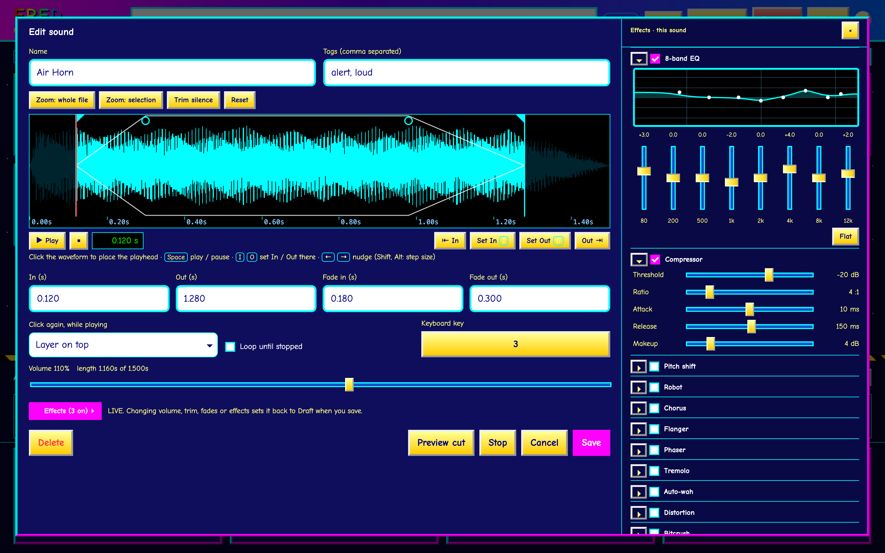
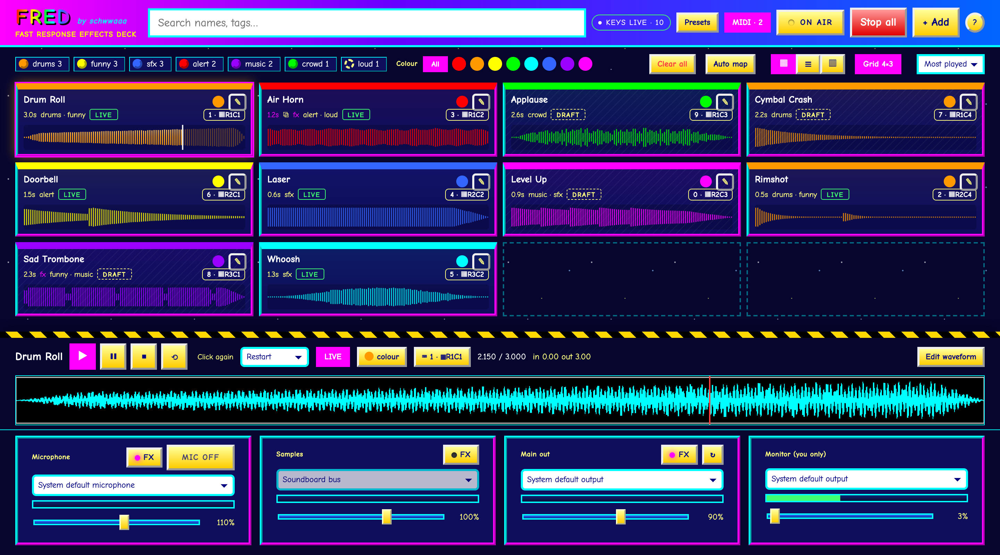

Every sound you own, one keystroke away
A local soundboard that mixes with your microphone and feeds Discord, Steam and Audacity.
FRED holds your library of sounds, lets you tag, colour and search them in an instant, and plays them the moment you ask. Shape any sound with the waveform editor, run voice effects on your mic, the samples or the whole mix, and send the result to any app that accepts an audio input. Everything runs on your own computer: no accounts, no subscriptions, no network.
Built for the live moment: a Draft/Live switch and ON AIR button keep unapproved sounds off the air, the mic is always off at launch, and your session autosaves so a crash costs you nothing.

Basic operationGet playing in five steps
- Add. Press + Add and choose WAV, MP3, FLAC, OGG or AAC files.
- Tag. Click a name to rename it in place. The pencil sets tags and colour. Filter with chips and dots, or search (/).
- Play. Click a card. A second click restarts it (or stops, or layers, per card). Esc stops all. Drag a card to reorder.
- Key it. Click the keyboard chip, then press a key or hit a MIDI pad. Or press Auto map to do the whole board in order.
- Shape it. Edit waveform: click to place a playhead, Space plays and pauses, I O set In and Out there.
Safety firstKeep the wrong thing off the air
| LIVE / DRAFT | Drafts play on your Monitor only. Make a sound Live to allow it out. |
| ON AIR | Off at launch. While off, nothing reaches the main output. |
| MIC | Off at every launch and never restored. Ctrl+M toggles. |
| MONITOR | Your headphones only. Your mic is never played back into it. |
Effects & layoutSixteen effects, your layout
Gate, high/low-pass, 8-band EQ, compressor, pitch, robot, chorus, flanger, phaser, tremolo, auto-wah, distortion, bitcrush, radio, echo and reverb, on the mic, the samples, the master or any single sound. Save favourites as presets.
Show the board as cards in any grid (4×5, 8×8… to match your controller), a compact list, or lanes like tracks in Ableton. Drag sounds into your own order.
MIDI pads play sounds too and are named by place (R2C3). Any grid controller works: FRED knows APC and Launchpad, and learns others in 30 seconds. Pads light up with the sound’s colour: bright for Live, dim or pulsing for Draft, white while playing.

Into Discord, Steam & Audacity
Those apps choose an input device. On macOS press ? → Install FRED Mic (one password prompt), send Main out to it, and pick FRED Mic as the microphone in the other app. Only your mic and Live, ON AIR samples come out. On Windows FRED guides a free VB-CABLE install. Set Monitor to your headphones.
Never lose your place
Your session autosaves every second and returns after a restart or crash. Presets save the whole project: sounds, edits, lanes, levels and effects. MIDI pads, and global hotkeys in the desktop app, work while another app has focus.
Run it
npm install, then npm run dev, or npm run build for FRED.app and a .dmg. Needs Rust and Node. Tested on macOS (Apple silicon).